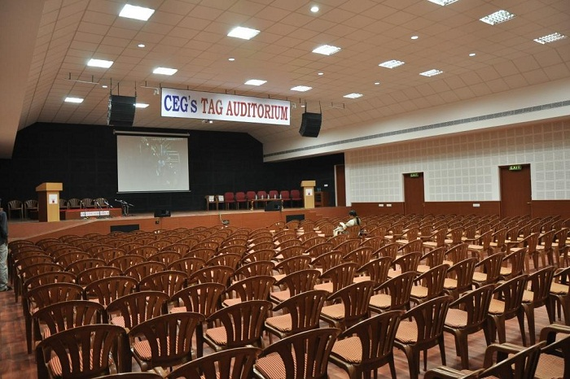

ANNA UNIVERSITY
Home
Map
Details
About Anna Univeristy
Contact
Student Registration
TAG AUDITORIUM
Tag auditorium is almost always filled with buzzling activity. Being the second largest stage in Anna university, ‘Tag Audi’ as the students call it, is a place for many theatre performances, cultural events and MUNs. It seats upto 150-200 people. It was one of the more recent constructions and needed lesser labor due to its compact structure. Since many events occur here, it’s a very common hangout spot among the students.
